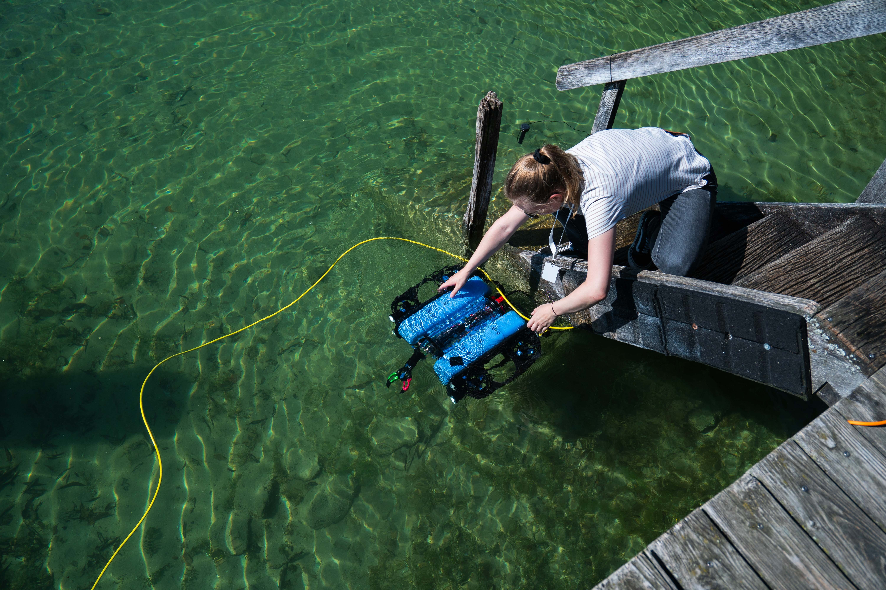
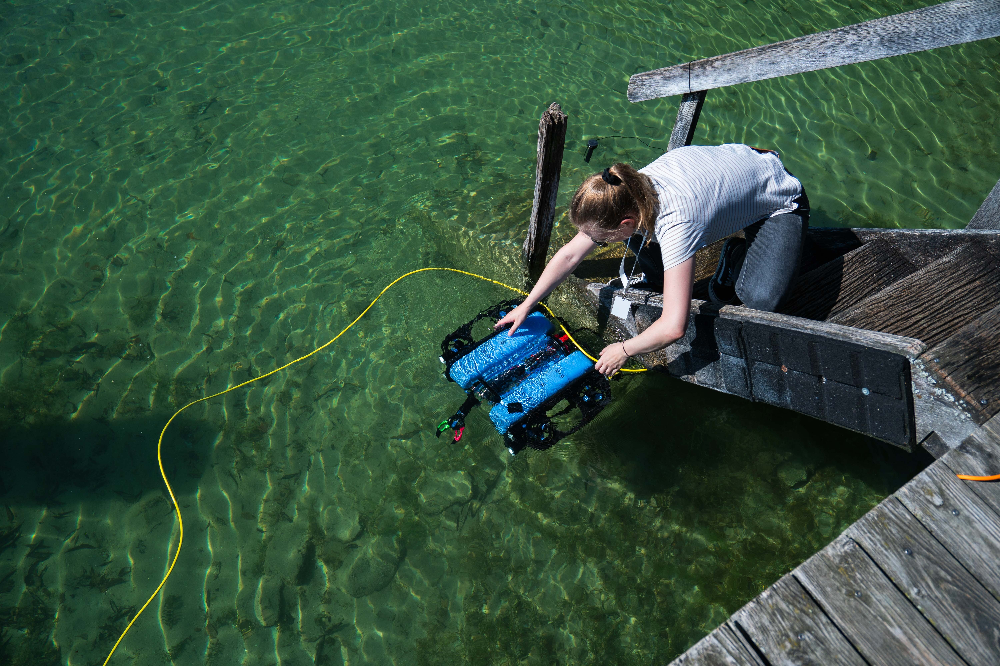

About
The Environmental Robotics group invites Master’s and advanced Bachelor’s students in Engineering, Robotics, Environmental Sciences or Biology to take part in an interdisciplinary Summer School where technology meets nature.
When?
4 days in October
October 1st – Kickoff with an introduction to environmental robotics and limnology, plus a take-home simulation task
October 6th & 7th – Hands-on lab sessions: programming, building sampling systems, testing robotic platforms
October 10th – Field deployment at a nearby lake: collect and analyze real environmental samples using your own robotic setup
Where?
Lab in Garching-Hochbrück (Carl-Zeiss-Straße 8, 85748 Garching-Hochbrück) & fieldwork at a nearby lake

What to expect?
- Introduction to Environmental Robotics
- Basics of Limnology
- Hands-on Lab Work
- Field Deployment
Learn about autonomous surface boats and underwater drones, and complete a small simulation exercise at home
Understand key environmental parameters and the fundamentals of inland water ecosystems
Program robots to follow autonomous paths and build custom setups for environmental sampling
Test your system on a nearby lake, collect real samples, and analyze them directly on site
The course will be held in German or English, depending on the participants.
 

Who can apply?
Master’s and late Bachelor’s students in engineering, mechatronics, robotics, environmental sciences or biology.
Join our Summer School!
Apply now and take part in an interdisciplinary research experience where technology meets nature! Write a few sentences about your background, why you want to participate in the Summer School, what experience you have in the field of robotics and in the field of recording environmental parameters and which semester you are in. We would like to assign the participants so that they have similar levels of knowledge.
(Due to limited capacity, we are unfortunately only able to offer places to around 10 students)